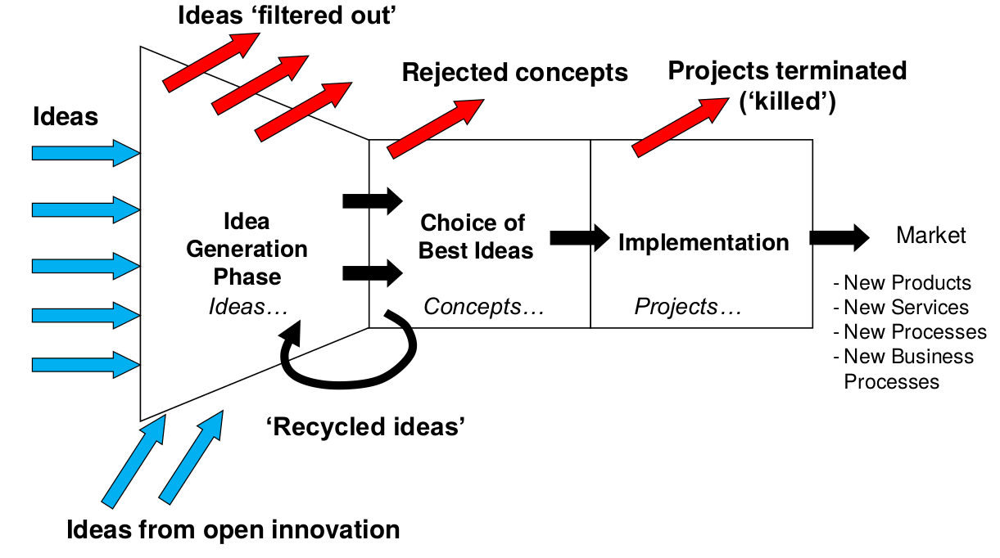
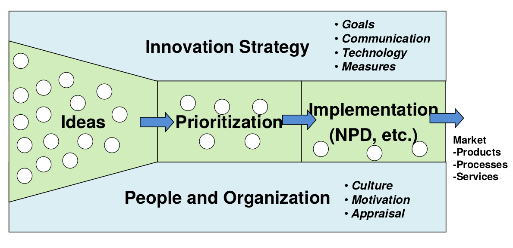
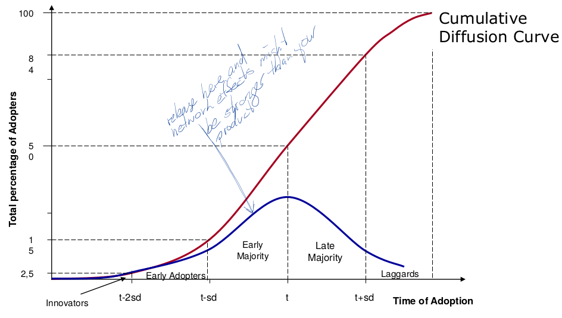
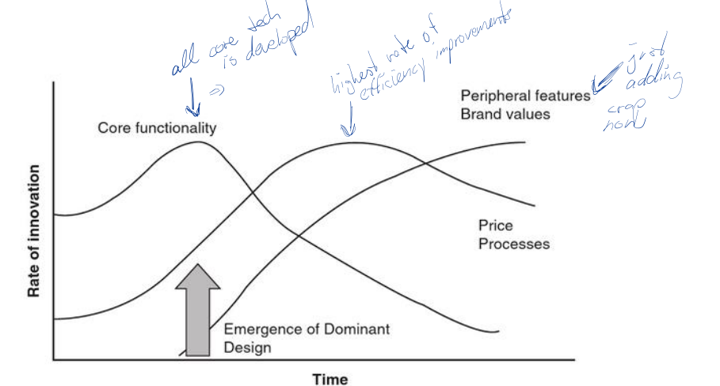
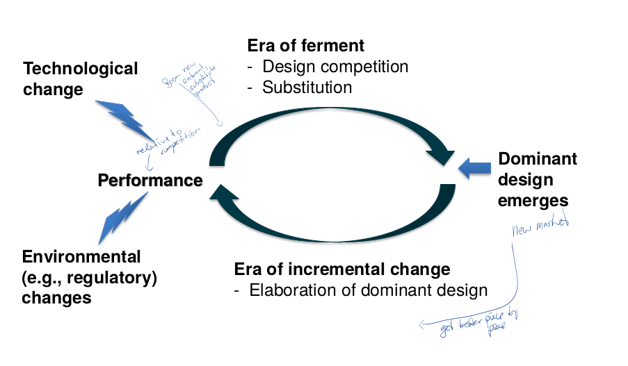
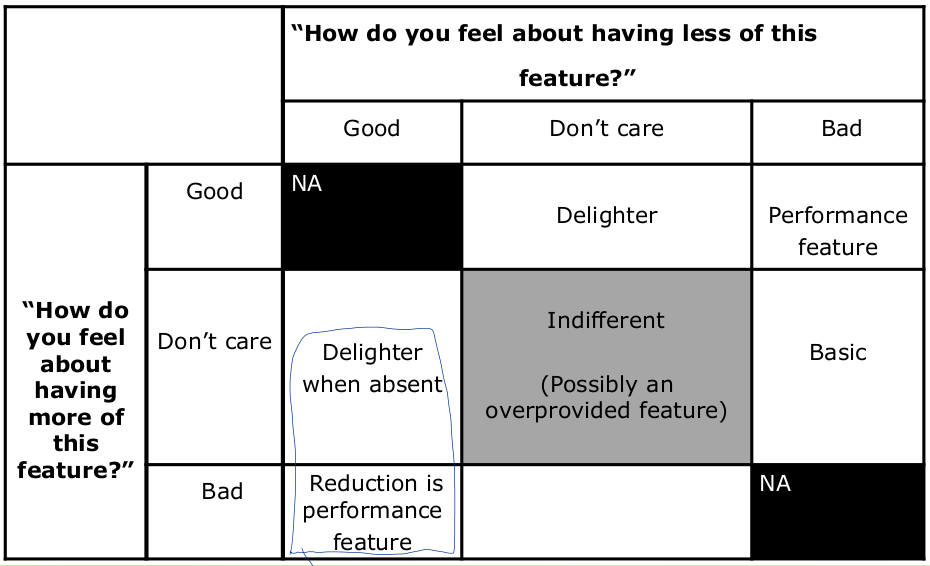
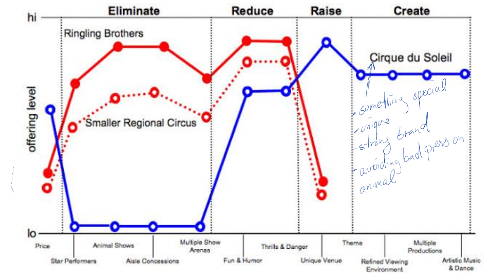
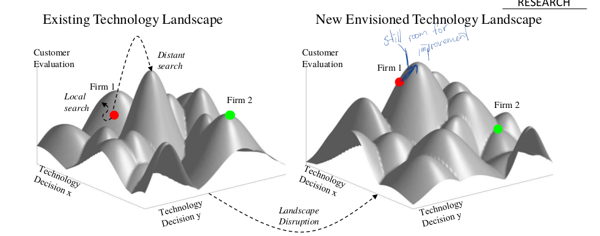

Supply Chain Innovation Summary
University of Cologne winter semester 2017/18
Pascal Brokmeier
Chapter 1: Types of Innovation
What is Innovation?
- Needs to be distinguished from creativity and inventions
- linked to the idea of markets (hence demand and supply)
- encompasses the entire process from the inception to the introduction and marketing of a new product/service/business model
How to measure Innovation? Such a loosely defined concept is difficult to measure and quantify. Several proxies can be choosen such as patents, R&D expenses or new product introductions. However, all those proxies suffer from common issues. While they are certainly all correlated with the innovation performance of a firm, the extend of the correlation can vary strongly. Some companies might not file patents. Some only focus on very few products. Some might have no explicit R&D cost as they have a culture of innovation that leads to each employee suggesting improvements.
Innovation Dimensions and Degrees
4 Dimensions: Products, Services, Production and Business Processes.
Generally, it's also a difference whether a firm innovates it's process of production (or service) or its actual product.
3 Degrees: Incremental, Breakthrough and Radical Innovation
Generally, radical innovation is (obviously) more risky and rarely, projects aiming at radical innovation are on time, budget, spec and satisfy the customers demand. Hence, common patterns of budget allocation for the three kinds are 70:20:10.
The Innovation Process and the Pentathlon Framework
The Pentathlon framework describes a funnel of filtering out many initial ideas to only select those with the highest chance of succeeding. To ensure innovation can succeed it is not only important to facilitate it by supplying all the necessary resources and create an environment that is open to innovation but it is also necessary to select and refine ideas and projects.

Recent years have shown shifting areas of focus for research into innovation management. While the Stage Gate Model has been one of the most popular frameworks in the mid 90's, the interest has shifted towards more progressive ideas such as:
- cultures of Innovation
- disruptive Innovation
- business model Innovation
- Open innovation
especially the last field has seen large interests in recent years.

Innovation in Manufacturing vs. Services
Services are different from manufacturing as they don't output specific products. They are often:
- Intangible: Meaning they have no physical representation.
- Customer contact intense: Customers interact (often virtually / digitally) with the firm. New products require new approaches to the interactions with the C
- Inhomogeneous: Because services are easily customizable, it is important to ensure each customer segment receives the tailed version of the service offering.
- Perishability: Services don't have a time lag between production and delivery. A performed service is instantaneous, taking away any safety stocks possibilities.
Review Questions
- Conceptually, delineate innovation from (i) creativity and (ii) invention
- Innovation involves an entire process from start to finish, meaning not only to come up with a creative idea (i) but also to develop and construct it (ii) and then finalize it to allow delivery to the customers. It also requires ensuring a market for the product exists and it requires communicating the new product to potential customers.
- How do product innovations relate to process innovation in chronological terms?
- Product innovation usually comes first. A new product gets developed and enters the market. Afterwards, the process of it's creation or delivery can be optimized.
- Compare product innovations against process innovation by using the generic innovation funnel. Explain commonalities and differences.
- Process innovation is much easier to evaluate but much harder to generate. A well optimized process does not spawn many ideas for further improvements. However, once a potential improvement has been identified, it is much easier to evaluate the benefits and act upon it. A new product idea is quickly developed (many people have ideas, only few have great ones), but it requires consistent and strict filtering and selection to ensure the investments will pay off. While a process is a simple cost/utility calculation + a feasibility evaluation, a new product must also be evaluated regarding potential customer interests, feasibility of the whole supply chain and many other limiting factors.
- Provide an example for an organization caught in the “Incremental Innovation Trap”. Why did that organization get caught in there?
- Nokia: The best phones of around 2005 were all made by either Motorolla (high end business class) or Nokia (large market share of mainstream). However, both failed to embrace the change in technology and did not adapt to the new trend of touch based modern modular app based OS platforms. Android and iOS wiped them both off the playing field.
- Why they got caught can only be guessed. Their technologies were good, highly refined and efficient. But their views were too strongly locked onto their point of view, meaning they couldn't see the benefits of the new products over their own. While they had strengths, the new competition had other advantages that answered the demand of the customers better. Once they tried to catch up, the technology gap between them and Google/Apple was too large to recover. Nokia tried with MS but even the software giant could not compete anymore.
- How can “Incremental Innovation Trap” be explained by risk taking behavior?
- If the organization as a whole is risk averse, the willingness to approach a radical innovation may be low. If one applies the 70:20:10 rule, it is even worse, as only 1/10th of the overall R&D budget is applied to high risk projects and most of them will not succeed. It therefore requires conscious efforts to assure continuous investment and improvement upon all efforts to avoid irrational risk averse behavior and to ensure eventual success with radical innovation.
Chapter 2: Innovation Context and Strategy
Innovation in Context
Adoption and Diffusion

- Some few adopters pick up on the product in the first phase of the release. If this point can be exited with a velocity of success, a typical adoption curve can be observed until the market is saturated
Technology S-Curves
As an example of technology development, the bicycle has slowly been emerging (1815 - 1861) for quiet a while. It has then seen rapid improvement in performance (1885 - 1895), after which it has been dormant for a long time (- 1970's) at which point innovation was retriggered by new materials and a new market demand for trendy styles.

The curve is accompanied by 4 phases:
- emerging
- Understand tech, find adopters, gain experience, advertise
- pacing
- demonstrate skills, find limits, standardize, respond to feedback, learn
- key
- improve performance of product, master tech, grow market share
- base
- be reliable, affordable, be known and respected (marketing), diversify / complement
Dominant Designs and Punctuation

The Need for an Innovation Strategy
If a company needs to improve its performance, it is helpful to NOT
- have everyone either try new things all day without any goal or leadership
- or have 50 people always doing the exact same thing over and over again without looking to serve the customer better and ignoring competition
Competitors WILL BECOME BETTER hence, a company must also improve its own performance. This is best done with:
- a clear set of goals
- a process of reaching those goals, given
- approaches that can lead to the reaching of the goals
So we need: Ideas, development of these ideas and pulling through. If there are too many ideas, you need to choose the right one.
Scenario Planning
Come up with a few dimensions of future developments of the environment:
- Bitcoin rises, falls
- Artificial Intelligence becomes more important, less important
- Jobs in AI become: more / less abundant ...
Road Mapping
- Time on x, different levels of abstractions / lanes
- it's more about the process of thinking abuot these things than about the roadmap itself.
Kano Model and Matrix

- The kano matrix however can only show what customers want not technology can provide. If tech boundries/limits exist, the model is useless.
- Many features move from a delighter to a basic feature, which is expected to exist in every instance of a product class. Cameras used to be a feature for phones and something special. These days, no one buys a phone without a camera.
Strategic Canvas
- Depending on the market in which a company competes, very different strategies can be employed. IT consulting firms often cooperate to serve large customer demands as there is no limiting amount of demand. There is "enough for everyone", hence they try to work together to reach all customers instead of trying to steal customers from each other to increase their market share.

Disruptive Innovation Strategies
Disruptive innovation (aka Christensen Model) is:
- a late discovered Technology
- that performs less well in some key dimensions
- that might offer some additional performance dimensions that previous tech didn't offer
- which quickly gains performance in key dimensions and exhibits a faster performance gain \(\Delta\) than the previous tech

This images neatly shows the difference between staying in the same technology landscape and innovating there vs. completely shifting to a new technology space and introduce a new product in this environment. An example can be made of the horse coaches and automobiles. No matter how good of a horse-breeder you were, once Fords came rolling around the corners, you lost your market.
A case can be made for the following:
- Performance oriented firm: Focus on adaption strategies
- Competitor-oriented (Market): Focus on disruption strategies
Review Questions
- What is the conceptual difference between technology S- curves and diffusion curves?
- What is the relation between diffusion and adoption curves?
- How do Technology S-curves affect the Kano model analysis for products relying on mature technologies? Explain briefly.
- At which stage of a technology S-curve is the emergence of a future dominant design most likely? Explain why.
- Discuss whether (or not) Tesla’s Model 3 is a disruptive innovation.
- How do firms’ performance benchmarks affect their technology strategy choices? Why so?